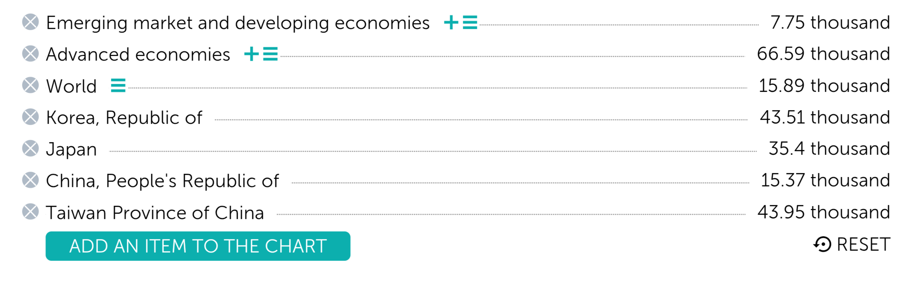
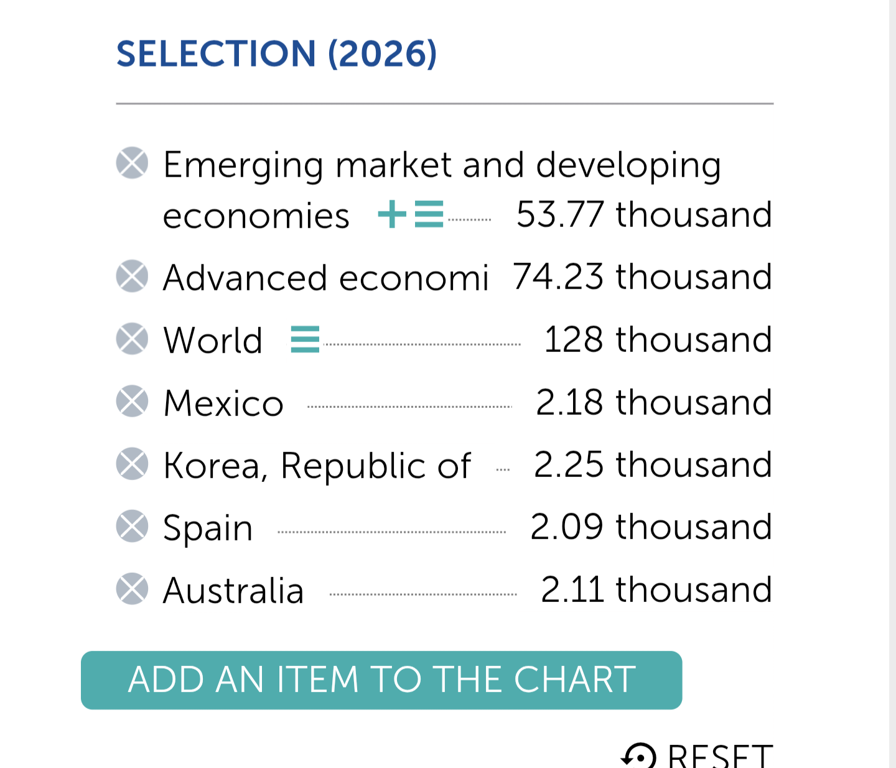
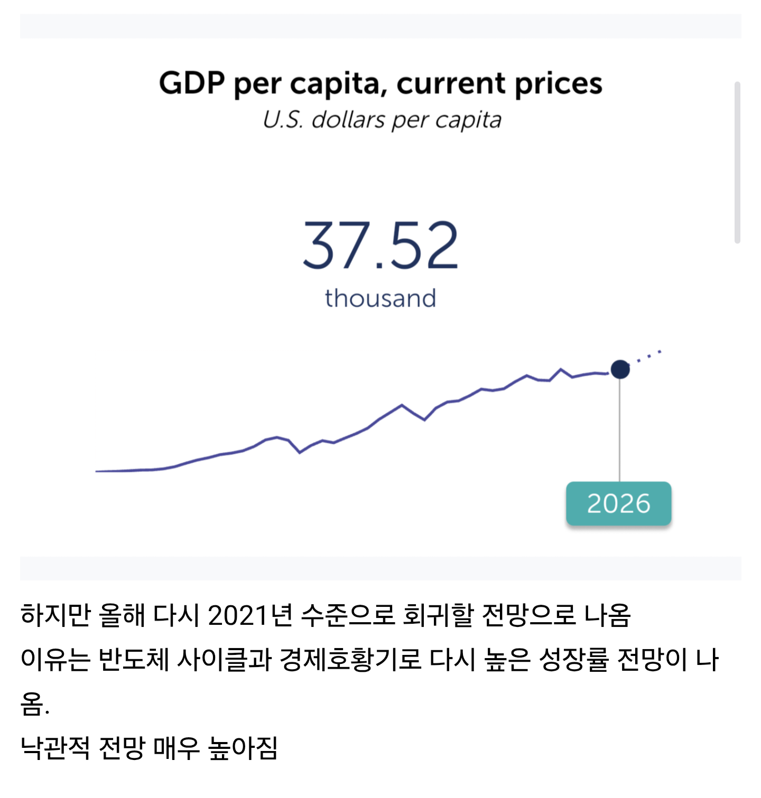
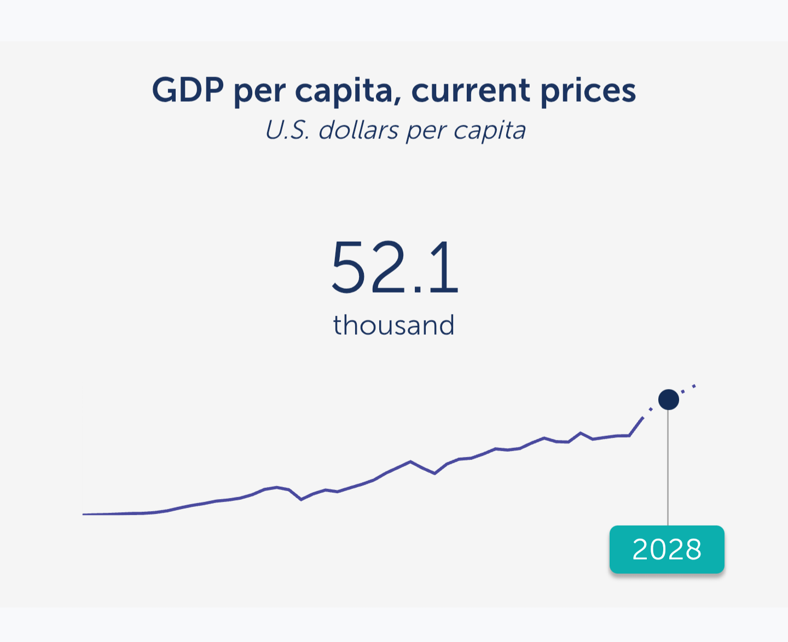

동아시아 국가들끼리 비교
1인당 gdp 대만을 약간의차이로 못따라잡았어도 턱끝까지 쫒아옴

올해 4월 집계까진 10~15위국가들끼리 도토리키재기수준때문에
한국은 15위까지 추락했지만 빠르게 11위까지 상향됨

https://www.dogdrip.net/679571747
불과 작년쯤 전망때는 이글쓸당시엔 이정도만 낙관적 전망했는데
기존 imf의 예상 수치를 한참뛰어넘어버림

전망이바뀐뒤 2028년 5.2만불 돌파로 바뀜.
세전월급 270인 아저씨는 그저웁니다 심지어 직장인도 아니고 프랜차이즈 계약직임ㅠ 일만 힘들고 빨간날은 명절포함 쉬지도 못하고 1년에 한번 상여금 20만원이 전부인